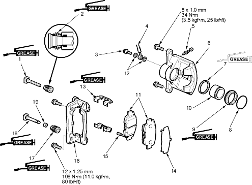

KX Model
: Use recommended rubber grease in the calliper seal set.
: Use recommended seal grease in the calliper seal set.

3.4 Nm (3.5 kgf/m, 25 lbf/ft)
9 Nm (0.9 kgf/m, 7 lbf/ft)
replace.
Replace.
Install inner pad with its wear indicator downward
 : Use recommended rubber grease in the calliper seal set.: Use recommended rubber grease in the calliper seal set.
: Use recommended rubber grease in the calliper seal set.: Use recommended rubber grease in the calliper seal set. : Use recommended seal grease in the calliper seal set.
: Use recommended seal grease in the calliper seal set.